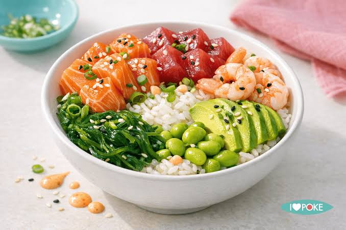
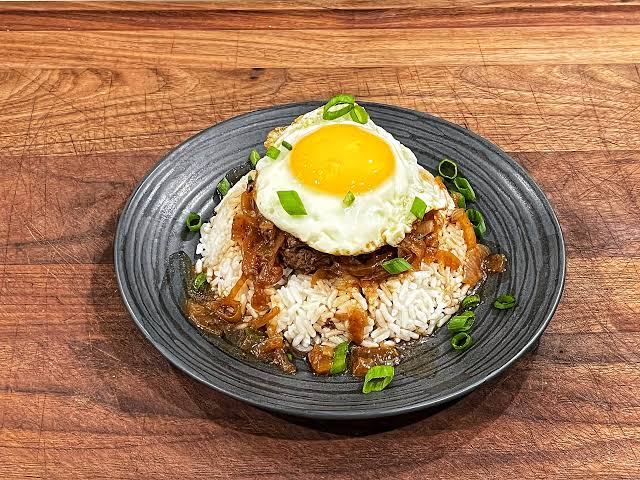
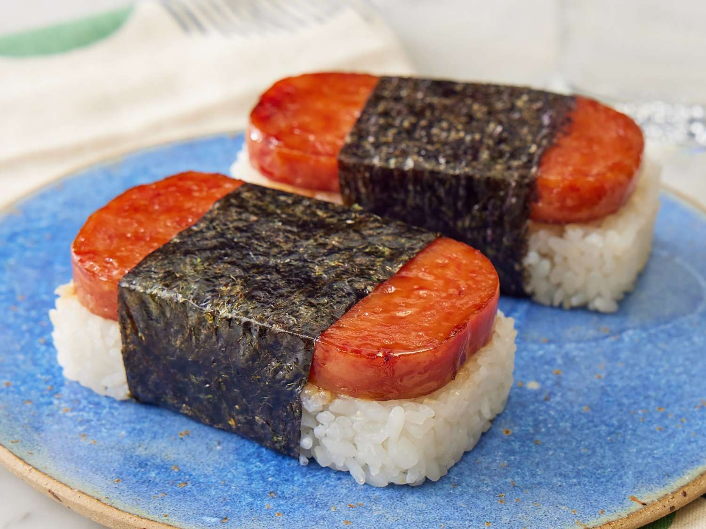

A poke bowl is a traditional Hawaiian dish with deep roots in Native Hawaiian cuisine. The word "poke" (pronounced poh-kay) means "to slice or cut crosswise" in Hawaiian, and the dish dates back centuries when Native Hawaiians would season freshly caught reef fish with sea salt, seaweed, and crushed kukui nuts. It remained a local staple for generations before gaining mainstream popularity in the early 2010s, eventually spreading across the US mainland and internationally as a trendy health food.
At its core, a poke bowl starts with a base, typically sushi-grade rice, though greens, quinoa, or noodles are common modern alternatives. The star of the dish is the protein — traditionally ahi tuna, cut into cubes and marinated in a mixture of soy sauce, sesame oil, and green onions. Other popular protein options include salmon, shrimp, octopus, or tofu for a vegetarian version. The marinated protein is then placed over the base and topped with a variety of fresh ingredients such as avocado, edamame, cucumber, mango, shredded carrots, and seaweed salad. A drizzle of spicy mayo, ponzu, or sweet chili sauce is usually added to finish it off, along with crunchy toppings like sesame seeds, crispy onions, or masago. The beauty of a poke bowl lies in its flexibility — it is endlessly customizable while staying fresh, nutritious, and satisfying.

Loco Moco is a beloved Hawaiian comfort food with surprisingly humble origins. It was created in 1949 in Hilo, Hawaii, by a small diner called the Lincoln Grill, reportedly invented for a group of hungry teenagers from the Lincoln Wreckers Sports Club who wanted something cheap, filling, and fast. The name "loco" is thought to come from one of the teenagers who went by that nickname, while "moco" was simply added as a rhyme. What started as a no-frills working-class meal has since become one of Hawaii's most iconic dishes, found everywhere from roadside diners to upscale restaurants across the islands.
The dish is straightforward to make but deeply satisfying. It begins with a generous scoop of steamed white rice as the base, topped with one or two seasoned beef patties cooked to a nice sear, similar to a hamburger patty. On top of the patties sits one or two fried eggs, cooked sunny-side up so the yolk stays runny. The whole dish is then smothered in a rich brown gravy, traditionally made from beef broth, onions, and Worcestershire sauce, which ties everything together. Some modern variations swap the beef patty for spam, portuguese sausage, shrimp, or even kalua pork. Optional toppings include sautéed mushrooms, caramelized onions, or a dash of hot sauce. It is a pure, unapologetic plate of comfort — simple ingredients stacked together into something far greater than the sum of its parts.

Spam Musubi is one of Hawaii's most iconic snack foods, blending Japanese culinary tradition with American canned meat in a uniquely Hawaiian way. Its origins trace back to World War II, when Spam became widely available across Hawaii due to its heavy use as a military ration by American troops stationed on the islands. With Hawaii's already strong Japanese immigrant population and deep culture of onigiri — seasoned rice formed into shapes and wrapped in nori — it was only natural that the two would eventually merge. The dish is widely credited to Mitsuko Kaneshiro, who began selling it in the 1980s, and it quickly became a staple snack sold in convenience stores, gas stations, and school cafeterias across the islands.
Making Spam Musubi is simple and requires minimal ingredients. A slice of Spam is first cut from the block and pan-fried until caramelized and slightly crispy on the edges, then glazed in a mixture of soy sauce, sugar, and mirin for a sweet and savory coating. A block of seasoned sushi rice is then shaped using a musubi mold or the empty Spam can itself as a mold. The fried Spam slice is placed on top of the rice block, and the whole thing is wrapped tightly with a strip of nori seaweed to hold it together. Some variations add a thin layer of scrambled egg, furikake seasoning, or sriracha mayo between the rice and Spam. The result is a portable, affordable, and addictive little snack that perfectly captures Hawaii's multicultural food identity.